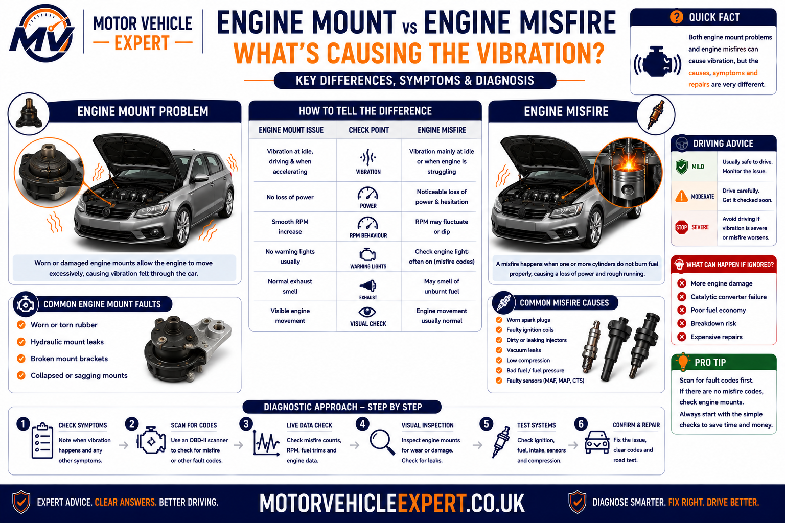
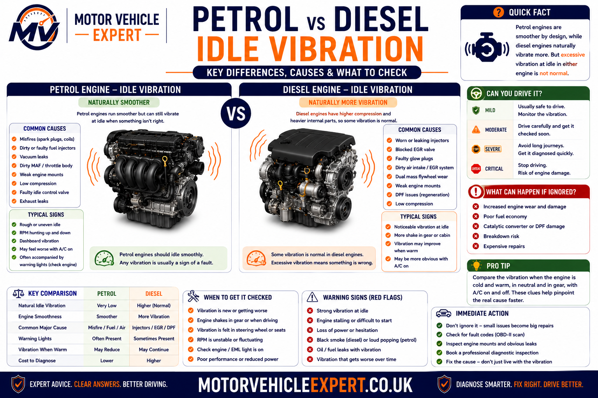
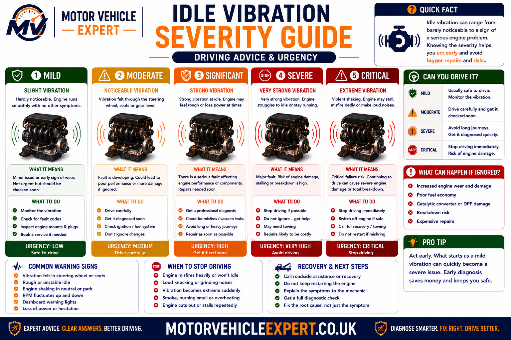
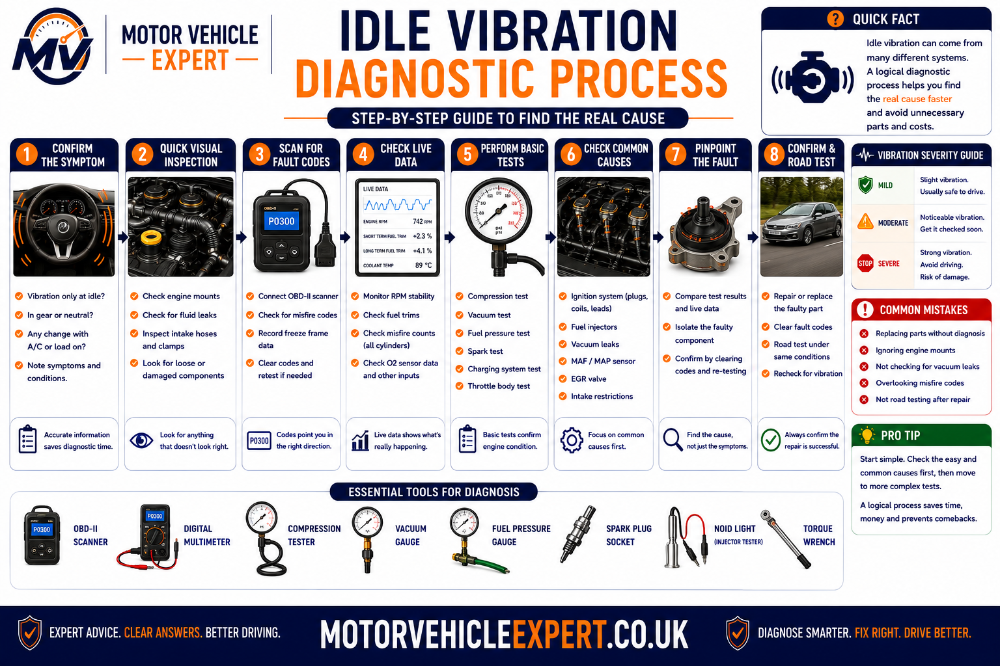
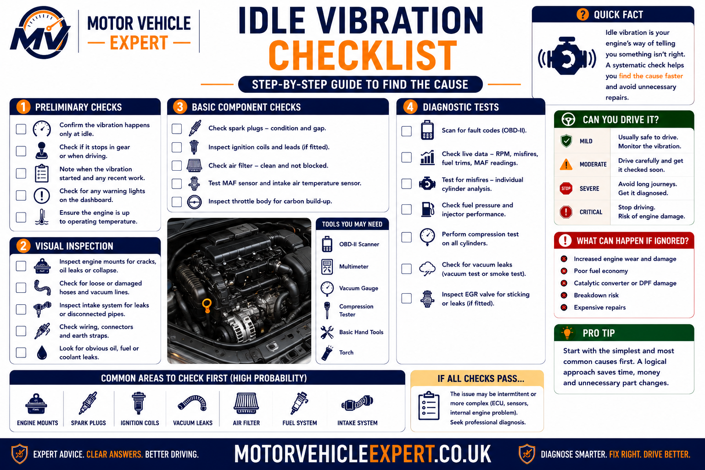

Why Does My Car Vibrate at Idle?
A car that vibrates while idling is usually suffering from either an engine running problem or a component that can no longer isolate normal engine movement from the body of the vehicle. In many cases the fault is relatively minor, but severe vibration may indicate an active engine misfire, damaged engine mount, fuel system problem or another mechanical issue that requires prompt diagnosis.
The first step is to determine whether the engine itself is running unevenly or whether it is running normally but transmitting excessive vibration into the cabin. A rough-running engine often points towards ignition, fuel, air or compression faults, whereas a smooth-running engine with heavy vibration frequently indicates worn engine or gearbox mounts.
Worn Engine Mounts
The engine runs normally but vibration is transferred into the steering wheel, seats and dashboard.
Engine Misfire
Uneven combustion causes the engine to shake, idle roughly and often trigger the engine management light.
Fuel or Airflow Problems
Dirty throttle bodies, injector faults and intake leaks commonly produce unstable idle speeds and vibration.
Charging or Sensor Faults
Low voltage or incorrect sensor readings can upset idle quality and make vibration worse.
Before replacing engine mounts, confirm that the engine is idling smoothly. A mount cannot correct an engine misfire, and replacing mounts will not cure vibration caused by uneven combustion.
What Does Idle Vibration Tell You?
Every engine produces a small amount of vibration while running. Modern vehicles use engine mounts, gearbox mounts and carefully balanced rotating components to isolate these normal vibrations from the passenger compartment. When vibration suddenly becomes noticeable, either the engine is no longer running smoothly or something has reduced the vehicle's ability to absorb those vibrations.
Uneven Combustion
Misfires, injector faults, vacuum leaks, ignition problems or poor compression create uneven power pulses. Instead of rotating smoothly, the crankshaft speeds up and slows down slightly, producing noticeable shaking through the vehicle.
Failed Mounts
Even when the engine is running perfectly, worn rubber engine or gearbox mounts allow normal engine movement to pass directly into the body shell, steering wheel and seats.
Only at Idle
Frequently linked with engine mounts, idle-speed control or slight ignition faults.
Idle & Acceleration
More likely to involve ignition, fuel delivery, intake leaks or engine management faults.
Idle in Drive Only
Automatic vehicles often reveal worn mounts because the drivetrain is placed under greater load.
Note whether the vibration changes when selecting Drive or Reverse, switching the air conditioning on, increasing engine speed slightly or turning electrical accessories on. These simple observations often point technicians towards the correct system before diagnostic testing even begins.
Most Common Reasons a Car Vibrates at Idle
Although every vehicle is different, most idle vibration complaints fall into a relatively small number of diagnostic categories. Identifying which category best matches your symptoms is the fastest route towards an accurate repair.
Engine Mounts
Split or collapsed rubber mounts allow engine vibration to reach the cabin.
Engine Misfire
Uneven combustion causes shaking, rough idle and often poor acceleration.
Dirty Throttle Body
Carbon deposits reduce airflow control and make idle unstable.
Vacuum Leak
Extra air entering the engine upsets the air-fuel mixture and causes rough running.
Injector Problems
Dirty or restricted injectors prevent cylinders receiving equal amounts of fuel.
Spark Plugs & Coils
Weak ignition components frequently cause idle misfires before affecting higher engine speeds.
Charging Faults
Low battery voltage or alternator faults may reduce idle quality and electronic stability.
Compression Loss
Burnt valves, timing issues or internal engine wear may produce persistent vibration.
How to Tell the Difference
One of the biggest mistakes made during idle-vibration diagnosis is replacing engine mounts when the engine is actually misfiring—or replacing ignition parts when the real fault is a collapsed mount. Although both faults make the vehicle shake while stationary, they create very different symptoms once you know what to look for.

Signs of Failed Engine or Gearbox Mounts
- Engine idles smoothly.
- No misfire fault codes stored.
- RPM remains stable.
- Vibration increases in Drive or Reverse.
- Steering wheel and dashboard shake.
- Little or no loss of engine performance.
- Vibration usually reduces above idle speed.
Signs of an Engine Running Fault
- Uneven engine note.
- Engine shakes visibly.
- RPM fluctuates at idle.
- Loss of power during acceleration.
- Possible flashing engine management light.
- Misfire fault codes such as P0300.
- Fuel consumption often increases.
If the engine is running unevenly, diagnose the misfire before replacing engine mounts. A new mount cannot compensate for uneven combustion, damaged ignition components or poor fuel delivery.
Idle Vibration Differs Between Petrol and Diesel Engines
Petrol and diesel engines naturally produce different levels of vibration. Diesel engines generate greater compression forces and often feel slightly rougher at idle even when operating correctly. The challenge is distinguishing normal diesel characteristics from a developing fault.

Typical Causes
- Ignition coil faults.
- Worn spark plugs.
- Vacuum leaks.
- Dirty throttle body.
- Fuel injector imbalance.
- Low idle speed.
Typical Causes
- Injector correction issues.
- Glow plug faults during cold starts.
- Dual-mass flywheel wear.
- EGR valve deposits.
- Engine mount deterioration.
- Fuel pressure irregularities.
A slight diesel vibration can be completely normal. However, sudden changes in vibration level, new noises or rough idle developing over time should always be investigated.
When Does the Idle Vibration Happen?
The conditions under which the vibration appears often provide valuable diagnostic clues before any scan tool is connected. Noting exactly when the vibration becomes worse can significantly reduce diagnostic time.
Only When Cold
Often linked with enrichment faults, glow plugs, ignition problems or intake leaks that reduce as the engine warms.
Only When Hot
Heat-related ignition failures, injector problems and low oil pressure may become more noticeable once operating temperature is reached.
Drive or Reverse
Increased drivetrain load often highlights worn engine mounts, gearbox mounts or idle-speed control problems.
A/C Switched On
Extra engine load from the air-conditioning compressor can expose weak idle control or existing engine faults.
Tell the garage exactly when the vibration occurs. Knowing whether the symptom appears only when cold, only in Drive or only with electrical loads switched on helps technicians eliminate many possible faults before testing begins.
How Serious Is Idle Vibration?
Not every vibration requires the vehicle to be stopped immediately, but the severity of the symptom should never be judged by vibration alone. Warning lights, engine performance, unusual noises and the driving conditions all help determine how urgently the fault needs attention.

Monitor
Slight vibration only, no warning lights, smooth engine operation and no noticeable loss of power.
Diagnose Soon
Vibration becoming worse, occasional hesitation, unstable idle or intermittent warning lights.
Stop Driving
Flashing engine management light, severe shaking, smoke, overheating, oil-pressure warning or repeated stalling.
Severe engine vibration accompanied by a flashing engine management light can indicate an active misfire capable of damaging the catalytic converter within a short period of driving.
How a Professional Garage Diagnoses Idle Vibration
Accurate diagnosis follows a logical sequence rather than replacing parts one by one. Professional technicians first determine whether the engine is producing abnormal vibration or whether the vehicle is simply failing to isolate normal engine movement.

Confirm the Complaint
Determine exactly when the vibration occurs and whether it changes with temperature, gear selection or engine load.
Electronic Diagnosis
Scan the ECU for stored fault codes, freeze-frame information and live-data abnormalities.
Mechanical Inspection
Inspect engine mounts, intake hoses, vacuum pipes, ignition components, injector operation and charging voltage.
Road Test & Verification
Confirm the repair under the same operating conditions before the vehicle is returned to the customer.
What Should a Garage Check?
A thorough workshop inspection combines electronic diagnostics with mechanical testing. Replacing components without confirming the source of the vibration frequently increases repair costs without solving the original problem.
- Full ECU fault-code scan.
- Live-data analysis.
- Misfire counters.
- Fuel-trim values.
- Charging-system voltage.
- Idle-speed stability.
- Engine and gearbox mounts.
- Spark plugs and ignition coils.
- Injector balance.
- Vacuum leaks.
- Compression where required.
- Accessory-drive condition.
Professional diagnosis should always confirm the fault before parts are replaced. The goal is to identify the root cause of the vibration, not simply replace the component that appears easiest to access.
Can You Drive a Car That Vibrates at Idle?
Whether you can continue driving depends entirely on what is causing the vibration. A slight increase in vibration caused by ageing engine mounts may simply reduce comfort, whereas severe shaking caused by an active engine misfire, charging fault or mechanical problem can rapidly develop into a much more expensive repair.
Minor Mount Wear
Slight vibration only, stable idle speed and no warning lights.
Developing Running Fault
Rough idle, occasional hesitation or intermittent warning lights should be diagnosed soon.
Severe Engine Vibration
Flashing engine management light, heavy shaking, smoke, overheating or repeated stalling requires immediate attention.
- The engine management light flashes.
- The engine repeatedly stalls.
- Power falls dramatically.
- Smoke appears from the exhaust or engine bay.
- Oil-pressure or overheating warnings appear.
- The vibration becomes violent.
Typical UK Idle Vibration Repair Costs
Repair costs vary considerably because idle vibration is a symptom rather than a fault. Accurate diagnosis should always come before replacing components.
Throttle Body Cleaning
£80–£180Carbon deposits affecting idle stability.
Engine Mount Replacement
£180–£450Depends on the number and location of the mounts.
Spark Plugs & Coils
£120–£420Common petrol-engine idle vibration repair.
Injector Repairs
£180–£700+Petrol or diesel injector testing and replacement.
Dual-Mass Flywheel
£700–£1,600+Mainly affects manual diesel vehicles.
Compression Repairs
£900–£3,000+Timing, valve or internal engine damage.
Spending around £70–£120 on professional diagnosis is usually far cheaper than replacing several components based on guesswork.
Repair Immediately or Continue Monitoring?
Not every idle vibration requires immediate repair, but monitoring should only be considered when the cause appears minor and no safety-related symptoms are present.
| Condition | Recommendation | Priority |
|---|---|---|
| Minor vibration only | Monitor and arrange inspection. | Low |
| Noticeably worsening vibration | Professional diagnosis recommended. | Medium |
| Warning lights or rough running | Repair before continued use. | High |
| Severe shaking or flashing warning light | Stop driving and recover vehicle. | Critical |
Should You Buy a Car That Vibrates at Idle?
Idle vibration does not automatically mean you should reject a vehicle. Minor mount wear may be inexpensive to repair, whereas vibration caused by engine damage, injector faults or poor maintenance can become a costly ownership problem.
- Minor vibration only.
- Good service history.
- No warning lights.
- Professional inspection available.
- Flashing warning lights.
- Heavy engine shaking.
- Poor starting.
- Smoke or overheating.
- No maintenance history.
Idle Vibration Inspection Checklist
Before authorising repairs, work through a structured inspection to ensure the true cause of the vibration has been identified.

Driver Checks
- Observe idle RPM.
- Check warning lights.
- Listen for misfires.
- Test Drive and Reverse.
- Switch the A/C on and off.
Garage Checks
- Scan the ECU.
- Inspect engine mounts.
- Test ignition and injectors.
- Check charging voltage.
- Verify repair with a road test.
Continue Your Idle Vibration Diagnosis
Idle vibration can overlap with engine misfires, rough cold running, stalling, acceleration hesitation, charging faults, worn mounts and wider drivetrain vibration. Use these related Motor Vehicle Expert guides to investigate the symptom pattern that most closely matches your vehicle.
Engine Misfire Symptoms and Causes
Diagnose rough idle, shaking, hesitation, cylinder fault codes, ignition faults, injector problems and compression loss.
Read Misfire GuideCar Rough Idle When Cold
Investigate shaking, hunting, stalling and misfires that appear during the first few minutes after a cold start.
Read Cold-Idle GuideEngine Management Light Guide
Understand steady and flashing warning lights, common engine faults, driving risk and the correct diagnostic process.
Read Engine-Light GuideVehicle Diagnostics Hub
Explore the complete collection of UK diagnostic guides covering engine faults, warning lights, fault codes and drivability symptoms.
Open Diagnostics HubCar Shaking and Vibration Diagnosis
Compare engine, mount, wheel, tyre, suspension and drivetrain causes when shaking is not limited to idle.
Read Vibration GuideCar Judders When Pulling Away
Separate clutch, flywheel, engine-mount and combustion faults when the vehicle shakes as drive is taken up.
Read Pull-Away GuideCar Hesitates When Accelerating
Diagnose flat spots, delayed response and load-related ignition, fuel, airflow or boost faults.
Read Hesitation GuideCar Losing Power When Accelerating
Compare misfires with fuel-pressure, turbocharger, airflow, exhaust restriction and limp-mode problems.
Read Power-Loss GuideCar Shudders at Idle but Drives Fine
Investigate vehicles that shake while stationary but appear normal once engine speed and road speed increase.
Read Idle-Shudder GuideCan an Engine Mount Fail an MOT?
Understand mount deterioration, excessive engine movement, safety concerns and when mount condition may affect an MOT result.
Read Engine-Mount GuideAlternator Not Charging Battery Signs
Check low voltage, unstable electrical supply, warning lights and charging faults that may affect idle quality.
Read Charging GuideBattery Warning Light Meaning
Learn why the battery light appears and how alternator, belt, wiring and voltage faults should be diagnosed.
Read Battery-Light GuideCar Stalls When Stopping
Diagnose low idle speed, throttle faults, air leaks, charging problems and transmission load when the engine cuts out at junctions.
Read Stalling GuideCar Jerks at Low Speed
Compare ignition, fuel, clutch, gearbox and throttle-control causes when the vehicle becomes uneven at low speeds.
Read Low-Speed GuideCar Smells Like Petrol
Investigate fuel smells linked with misfires, leaking injectors, evaporative-emissions faults and unsafe fuel leakage.
Read Petrol-Smell GuideExhaust Smell Inside the Cabin
Check exhaust leaks, poor combustion and cabin-fume risks when vibration is accompanied by exhaust smells.
Read Exhaust-Smell GuideIdle vibration should not be diagnosed from one symptom alone. Combine RPM behaviour, warning lights, fault codes, engine sound, temperature, gear selection and vibration location before deciding whether the fault involves combustion, mounts, electrical supply or the drivetrain.
Car Vibrates at Idle Questions Answered
These answers cover the most common questions UK drivers ask about rough idle, engine mounts, misfires, petrol and diesel vibration, warning lights, repair costs and driving safety.
Why does my car vibrate at idle?
A car can vibrate at idle because of worn engine mounts, an engine misfire, dirty throttle body, intake leak, injector imbalance, low idle speed, charging faults or poor cylinder compression.
Why does my car shake at idle but drive normally?
Idle is the lowest engine speed, so worn mounts and small combustion faults are often easiest to feel while stationary. Higher engine speed and road movement may hide the vibration once the car is driving.
How can I tell whether the vibration is caused by engine mounts?
Engine-mount vibration is more likely when the engine sounds smooth, RPM remains steady, no misfire codes are stored and the vibration becomes worse when Drive or Reverse is selected.
How can I tell whether the engine is misfiring?
A misfire often causes an uneven engine note, fluctuating RPM, hesitation, loss of power, fuel smell and an engine management light. Cylinder-specific or random misfire codes may also be stored.
Can bad spark plugs cause vibration at idle?
Yes. Worn, fouled or incorrectly gapped spark plugs can produce weak combustion and make a petrol engine shake or run unevenly at idle.
Can a faulty ignition coil make the car shake?
Yes. A weak ignition coil can cause one cylinder to misfire, particularly when cold or under load. The engine may shake, hesitate and trigger a cylinder-specific misfire code.
Can a dirty throttle body cause idle vibration?
Yes. Carbon and oil deposits around the throttle plate can restrict idle airflow and cause unstable RPM, hunting, near-stalling or rough running.
Can a vacuum leak cause a car to vibrate at idle?
Yes. Unmetered air entering through split hoses, breather pipes or manifold seals can make the mixture too lean and cause rough idle, hesitation or stalling.
Can fuel injectors cause vibration at idle?
Yes. Restricted, leaking or electrically faulty injectors can make one cylinder produce less power than the others, resulting in uneven combustion and vibration.
Why does the vibration become worse in Drive or Reverse?
Selecting Drive or Reverse places additional load through the drivetrain. This can expose collapsed engine or gearbox mounts and make weak idle control more noticeable.
Why does my car vibrate more when the air conditioning is on?
The air-conditioning compressor adds load to the engine. Worn mounts, weak idle control, charging faults or an existing combustion problem may become more noticeable when the compressor operates.
Is a small amount of diesel vibration normal?
Yes. Diesel engines often produce more natural vibration because of their higher compression. A sudden increase, uneven running, smoke or new warning lights should still be investigated.
Can glow plugs cause diesel vibration at idle?
Failed glow plugs can cause rough running immediately after a cold start because one or more cylinders do not reach suitable combustion temperature quickly enough.
Can a dual-mass flywheel cause vibration at idle?
Yes. A worn dual-mass flywheel may produce vibration, rattling or knocking at idle, particularly on manual diesel vehicles. The symptom may change when the clutch pedal is pressed.
Can low battery voltage affect idle quality?
Low or unstable voltage can affect control modules, ignition coils, injectors and electronic throttle operation. The battery, alternator and earth circuits should be tested where voltage is questionable.
Is vibration at idle dangerous?
Mild vibration caused by mount wear may not be immediately dangerous, but severe shaking, warning lights, smoke, stalling, overheating or loss of power requires prompt diagnosis.
Can I drive with a worn engine mount?
Minor mount wear may allow limited driving while repair is arranged, but heavily damaged mounts can allow excessive engine movement and place strain on hoses, exhaust components, wiring and driveshafts.
When should I stop driving because of idle vibration?
Stop driving if the engine management light flashes, the vehicle shakes violently, the engine repeatedly stalls, smoke appears, power drops sharply or oil-pressure and overheating warnings appear.
Will a full service fix idle vibration?
A service may help when worn spark plugs, restricted filters or neglected maintenance are responsible. It will not repair every mount, injector, sensor, wiring or compression fault.
How does a garage diagnose vibration at idle?
A garage should scan fault codes, inspect live data and misfire counts, check charging voltage, examine engine and gearbox mounts, test for air leaks and assess ignition, injectors and compression where required.
How much does an engine mount cost to replace in the UK?
A typical engine-mount replacement may cost around £180–£450, although the final price depends on the vehicle, mount type, labour time and whether more than one mount requires replacement.
How much does an idle misfire cost to repair?
Spark-plug and ignition-coil repairs may cost around £120–£420. Injector work may cost £180–£700 or more, while internal compression repairs can exceed £900 and may run into several thousand pounds.
Should I buy a used car that vibrates at idle?
Only consider the vehicle after the cause has been professionally diagnosed and the repair cost is known. Avoid cars with flashing warning lights, heavy shaking, smoke, poor starting or no maintenance history.
How do I know the idle-vibration repair has worked?
The repair should be checked under the same conditions that originally caused the vibration. Idle speed should remain stable, warning lights should stay off and the vibration should not return in Drive, Reverse or with the air conditioning operating.
Separate Rough Running From Vibration Transfer
The most important step when diagnosing a car that vibrates at idle is to determine whether the engine is running unevenly or whether worn mounts are transferring normal engine movement into the cabin.
If the engine note is uneven, the RPM fluctuates, power is reduced or the engine management light appears, investigate ignition, fuel, intake, electrical and compression faults. If the engine runs smoothly but the steering wheel, seats or dashboard shake—particularly in Drive or Reverse—engine and gearbox mounts become more likely.
Arrange a structured diagnosis that includes fault-code scanning, live data, misfire counters, charging voltage, intake-leak checks and a physical inspection of the engine and gearbox mounts. Confirm the cause before authorising replacement parts.